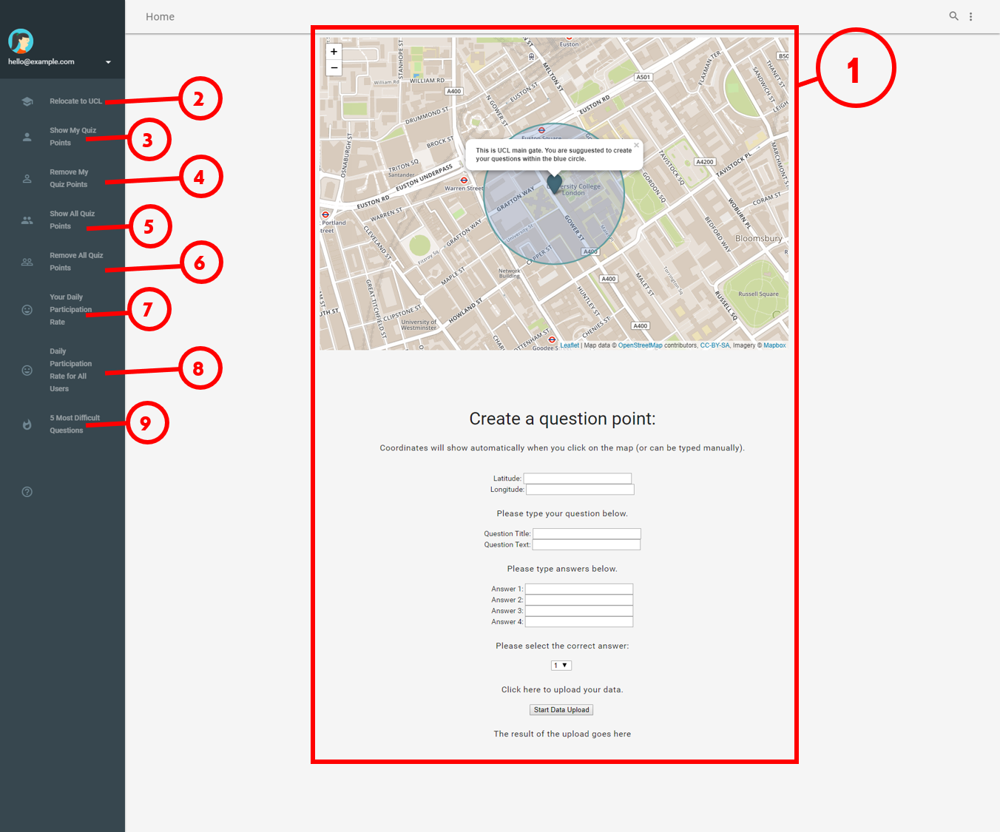
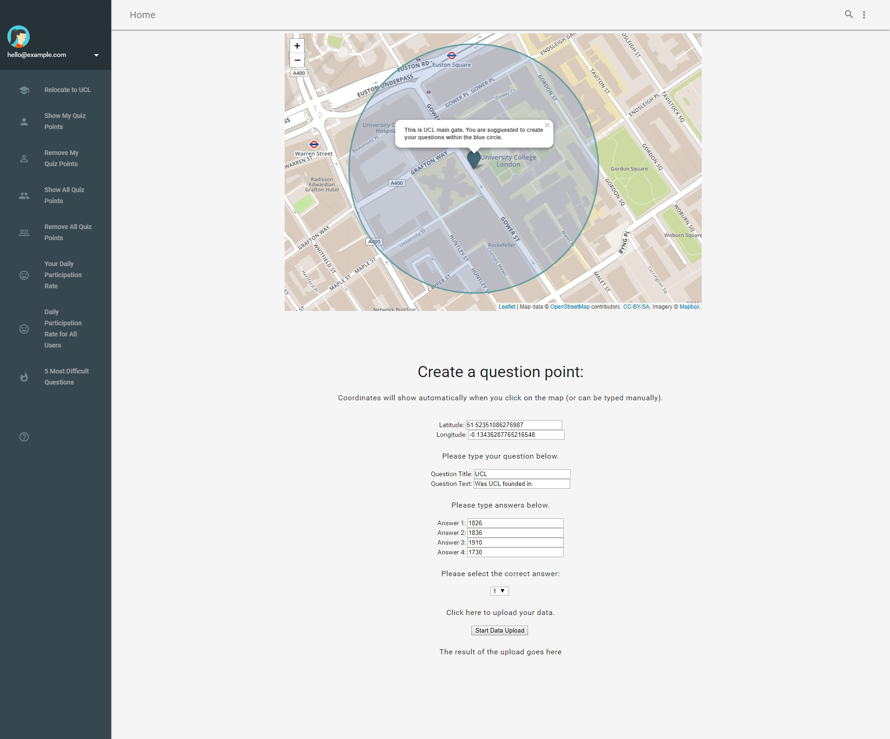
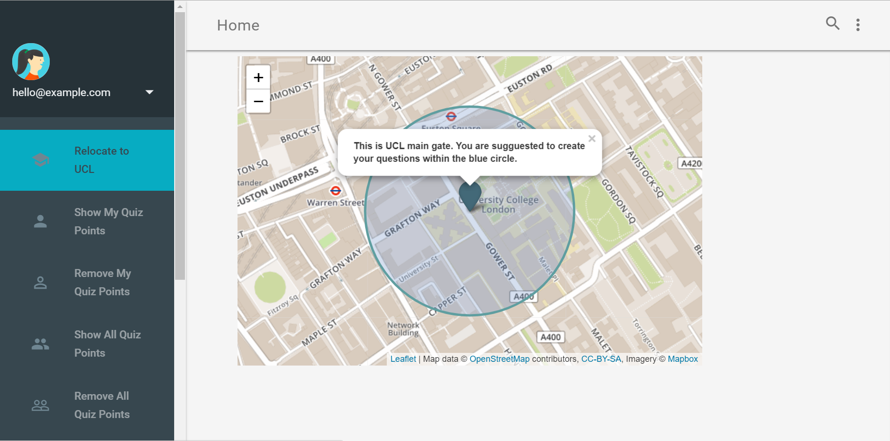
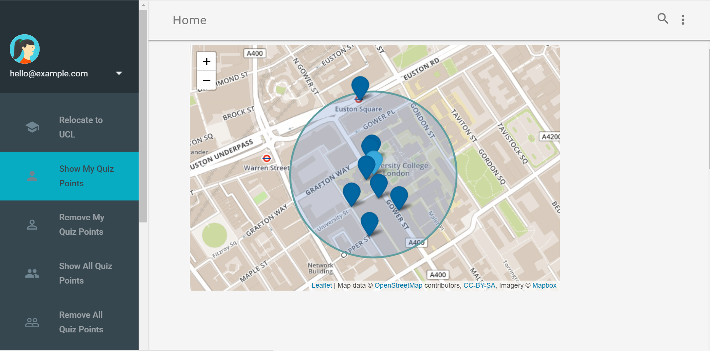
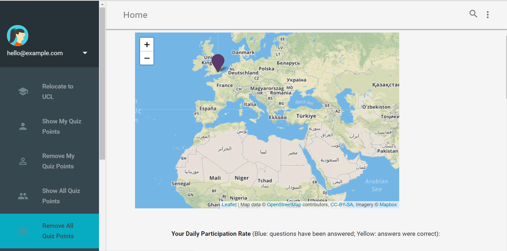
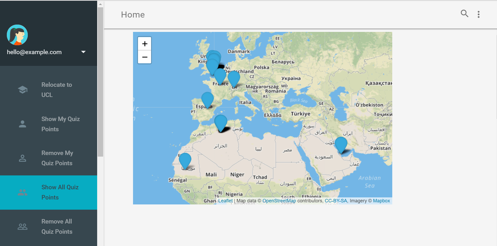
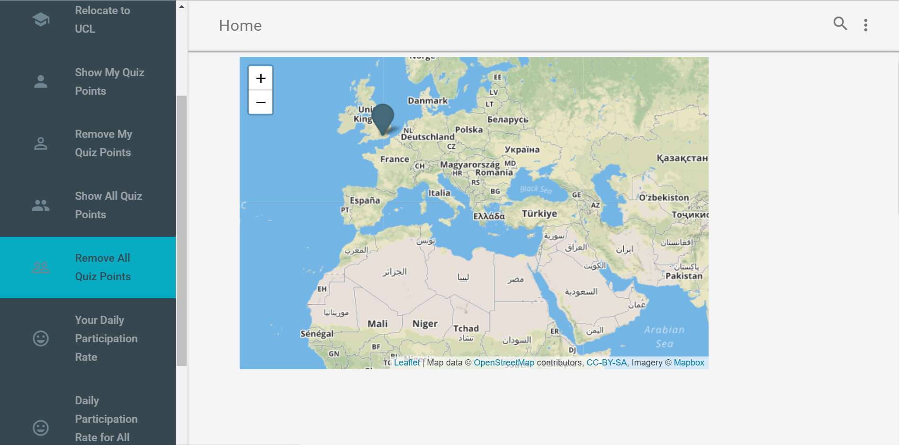
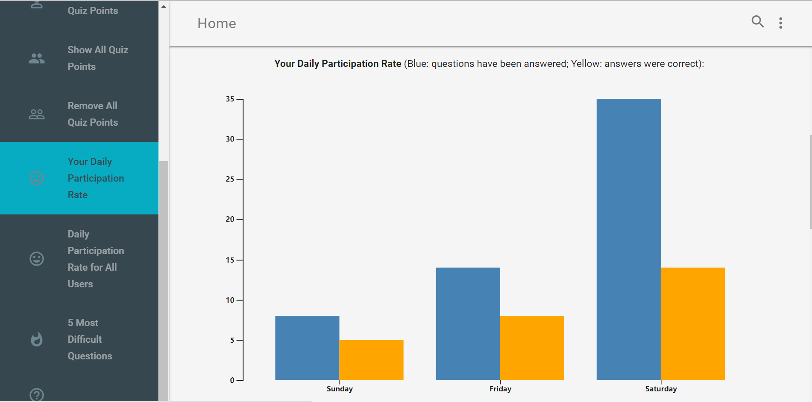
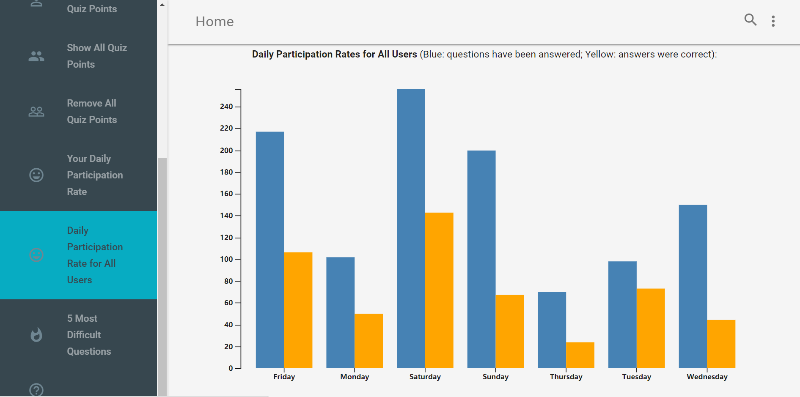
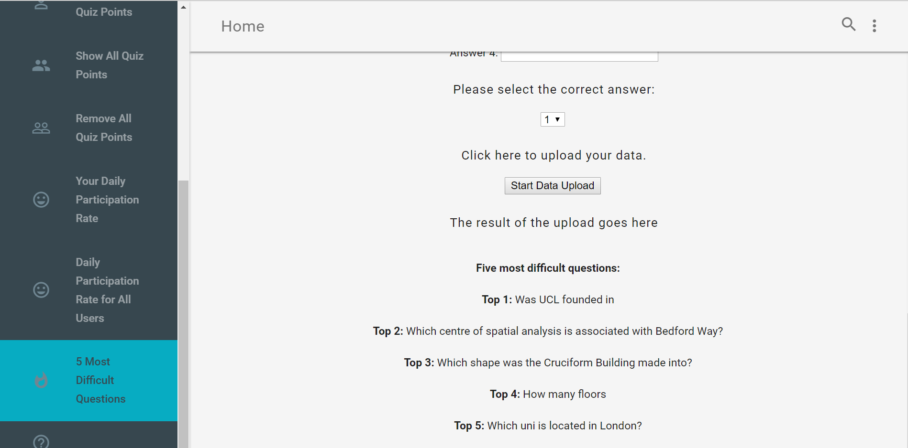

Location-Based App
Question Setting App User Guide
This webpage is designed to create new question points on a map.
The points will then be stored in a databased and displayed in a Quiz App.
Web interface:

Things you can do with this app (click the link below to know more about the functions):
- Create questions
- Relocate to UCL
- Show quiz points created by you
- Remove quiz points you created by you
- Show quiz points created by all users
- Remove quiz points created by all users
- Show your daily participation rate
- Show all users’ daily participation rate
- Show 5 most difficult questions
- Click on the map where you want to set the question, the latitude and longitude will show automatically.
- You can also manually type the latitude and longitude.
- Type question title.
- Type question text.
- Type four answers.
- Select the correct answer to your question.
- Click “Start Data Upload” to upload your question.

UCL will appear in the middle of the map when you click “Relocate to UCL”.

Existing quiz points that you have created will be displayed on the map when you click “Show My Quiz Points”.

Existing quiz points that you have created will be removed from the map when you click “Remove My Quiz Points”.

Existing quiz points created by all users will be displayed on the map when you click “Show All Quiz Points”.

Existing quiz points created by all users will be removed from the map when you click “Remove All Quiz Points”.

Your daily participation rate will be represented as a dual-scale bar chart when you click “Your Daily Participation Rate”.

Daily participation rates will be represented as a dual-scale bar chart when you click “Daily Participation Rates for All Users”.

Five most difficult questions will be displayed at the bottom of the webpage when you click “5 Most Difficult questions”.
